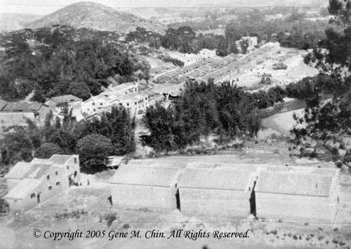

|  |
|
This photograph was taken by Fee Sheung from Star Hill in 1931, looking north. The river on the right, which flows north, does not have a name. It is just called "The River". The "bend" on the lower right was later changed to flow straight. This photograph shows two of the hamlets of 潢村 Vōng Tûn (Huángcūn) — 白雞 Bàk Gäi/ (Báijī) White Chicken in the bottom half of the picture with a few houses and 河清里 Hõ Tëin Lî/ (Héqīnglǐ) (a.k.a. 海邊 Hōi Bêin/ (Hǎibiān) Riverside) with about 25 houses just above and to the left of 白雞 Bàk Gäi/ (Báijī) White Border. The other four hamlets of 潢村 Võng Tûn (Huángcūn) are: 三多里 Xäm Ü Lî/ (Sānduōlǐ) (a.k.a. 舊村 Giù Tûn (Jiùcūn) Old Village), 連洲里 Lẽin Jiü Lî/ (Liánzhóulǐ) (a.k.a. 新村 Xïn Tûn (Xīncūn) New Village), 海清里 Hōi Tëin Lî/ (Hǎiqīnglǐ) (a.k.a. 向北 Hëng Bāk (Xiàngběi) Northward), 永清里 Vêin Tëin Lî/ (Yǒngqīnglǐ) (a.k.a. 向南 Hëng Nãm/ (Xiàngnán) Southward). |